Количественное исследование: сколько стоит отсутствие тёмной темы сайта?
Контекст
Директор по маркетингу site.pro случайно открыла сайт в режиме forced dark mode и увидела искажения в интерфейсе:
белый текст на белом фоне в hero-хэдере на главной;
инвертированные иллюстрации и инфографики;
искажение брендовых цветов.
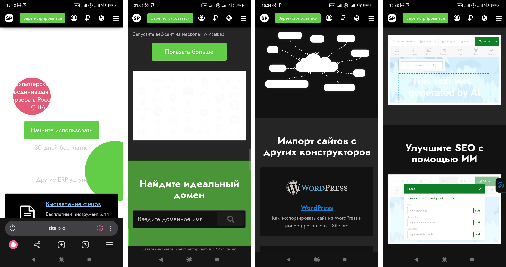
Принудительная тёмная тема site.pro.
Передо мной были поставлены такие вопросы: «Почему мы это раньше не замечали? Мы теряем деньги? Что с этим делать?».
Воспроизведя проблему на своих устройствах, я выяснила, что этот эффект возникает в браузерах, которые поддерживают принудительное перекрашивание «светлых» сайтов, у которых нет своей тёмной темы, в «ночной» режим.
Задача
Визуально проблема выглядела критично, но было неизвестно, насколько она масштабна с точки зрения бизнеса. Я поставила перед собой такие задачи:
Понять, влияет ли forced dark mode на конверсию и выручку.
Если влияет — оценить масштаб потерь.
Если нет — оценить риски: при каких условиях потери возникнут?
Сформировать стратегию действий.
Гипотеза
Я предположила, что:
пользователь, столкнувшись с сайтом, часть контента которого недоступна и выглядит «сломанной», с высокой вероятностью откажется от пользования представленным на сайте продуктом и/или от покупки платного тарифа, и это может найти отражение в конверсиях;
те, кто уже пользуются продуктом и достаточно лояльны, чтобы вносить ежемесячные платежи, вероятно, обратятся в поддержку.
Анализ
Техподдержка не зафиксировала обращений, связанных с искажениями интерфейса, так что часть б) моей гипотезы была опровергнута.
Для проверки первой части гипотезы я обратилась к аналитике по сайту, собираемой при помощи Mixpanel. Я собрала доску со следующими данными:
доля пользователей forced-dark браузеров;
воронка page view → complete payment (first time only);
Доля пользователей, просматривающих сайт с помощью браузеров, способных принудительно перекрашивать сайт, составила всего 0,46%. Но в количественном выражении это почти 27 тысяч уникальных пользователей.
За последние 12 месяцев в группе Forced Dark Browsers было всего 2 оплаты, конверсия составила 0,007% против конверсии 0,01% в контрольной группе.
Таким образом, конверсия действительно оказалась ниже, но статистической значимости у таких данных, на самом деле, нет. Потому что при таком размере сегмента даже 1–2 конверсии меняют процент кратно.
Предварительный вывод такой: доказать наличие финансовых потерь невозможно, потому что данные статистически нерепрезентативны.
Но отсутствие значимого эффекта сейчас не означает отсутствия риска в будущем, потому что доля dark-mode пользователей растёт (сейчас она составляет 60% — 80%), и предугадать, когда возможность принудительного затемнения появится в популярных браузерах невозможно.
И я перешла от анализа имеющихся данных к моделированию.
Исходные данные
Вот, что есть сейчас:
Общая конверсия оплат: 0.01% = 0.0001
Конверсия оплат в forced dark: 0.007% = 0.00007
Дельта конверсий (потенциально упущенные оплаты): 0.0001 − 0.00007 = 0.00003
ARPPU (средний доход с первой оплаты): 11700 / 580 ≈ 20.17€ ≈ 20€.
Реалистичный сценарий
Допустим, доля forced dark вырастает до 10% трафика, а разница конверсий остаётся на текущем уровне. Тогда:
Потенциально затронутая аудитория: 10% от 5.78 млн = 578 000 пользователей.
Потерянные оплаты: 578 000 × 0.00003 = 17.34 ≈ 17 оплат
Потерянная выручка: 17 × 20€ = 340€ в год
Пессимистичный сценарий
Увеличим долю forced dark до 20% трафика, а дельту конверсий до 0.00005.
20% от 5.78 млн = 1 156 000 пользователей
Потерянные оплаты: 1 156 000 × 0.00005 = 57.8 ≈ 58
Потерянная выручка: 58 × 20€ = 1160€ в год
Таким образом, относительно общего дохода потери составят ≈0.056% в реалистичном сценарии и ≈0.19% в пессимистичном сценарии.
Решение
При текущей доле пользователей браузеров с принудительной тёмной темой финансовый риск минимален, но при росте доли до 15–20% потери могут достигнуть ~1 000 € в год. Вкладываться в срочную разработку тёмной темы для сайта в данный момент нецелесообразно. Поэтому я предложила следующий план действий:
Аналитика:
отслеживание патчноутов популярных браузеров;
добавление флага prefers-color-scheme в аналитику Mixpanel;
регулярная проверка доли пользователей браузеров с принудительной тёмной темой.
Фронтенд:
запрет авто-перекрашивания через color-scheme;
явно заданные background-color и color для ключевых контейнеров и контейнеров с графикой;
фиксы для SVG-анимаций в хедере.
Дизайн:
учёт выявленных forced dark кейсов в редизайне;
включение проверок контрастности и доступности в дизайн-процесс.
Исправления во фронтенде необходимы уже сейчас для подготовки предстоящего редизайна сайта, потому что при редизайне нужно будет обеспечить корректное отображение накопленного за годы контента, а эти небольшие фиксы — это шанс обкатать решения.
Качественное исследование: почему читатели не пользуются поиском по справочнику?
Контекст
Дока — open-source справочник по веб-технологиям, который читают 150 000+ уникальных посетителей в месяц. Аудитория состоит как из разработчиков, так и студентов, только изучающих веб-разработку. Контент Доки энциклопедический, связный, с перекрёстными ссылками.
После релиза проекта команда заметила, что люди не используют поиск: достижения цели «Читатель воспользовался поиском» на Яндекс.Метрике были единичными, а конверсия цели «Клик по кнопке Меню», активирующей поиск, составляла около 2%.
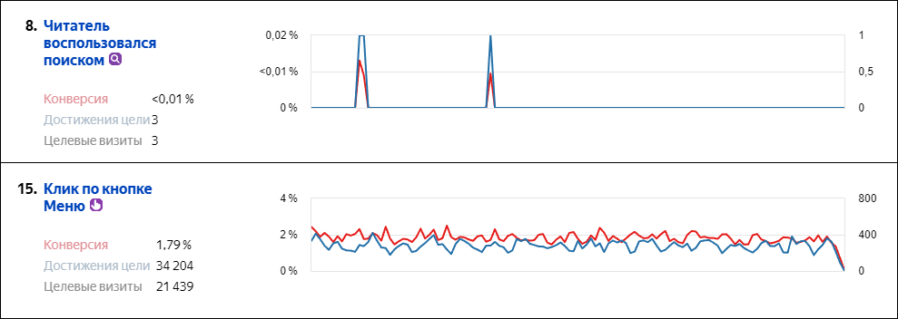
Метрики внутреннего поиска Доки в период с 01.05.24 по 31.08.24.
Задача
В первую очередь нужно было разобраться, действительно ли люди не используют поиск или мы не видим данные?
В случае, если поиском не пользуются, выяснить почему — поиск не нужен или пользователи его не находят?
И, собрав данные, разработать план действий.
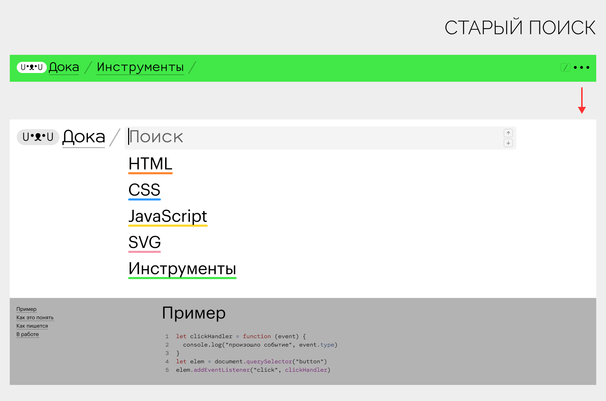
Старый поиск Доки.
Анализ
Поиск по Доке реализован при помощи JS и показывает найденные совпадения во всплывающем блоке на той же странице, где находится пользователь. Это объяснило аномально малые результаты метрики «Читатель воспользовался поиском»: страница https://doka.guide/search/ используется для расширенного поиска по базе знаний, перейти туда можно, но это редко требуется, потому что поиск через «всплывашку» выполняет ту же работу, но без лишних кликов и переходов.
Кроме того, «всплывающий» поиск можно активировать не только кликом по кнопке, но и нажатием на горячую клавишу / на клавиатуре. Эти сценарии не фиксировались в Яндекс.Метрике, что делало цель «Клик по кнопке Меню» неполной и не отражающей реальное использование поиска.
Имеющиеся количественные метрики не позволяли однозначно ответить на стоящие передо мной вопросы. В поисках ответа я проанализировала прокси-метрики:
глубину просмотра (3,5 страницы в среднем, 55% пользователей просматривали больше одной страницы);
долю внутренних переходов между материалами (35%);
переходы по перекрёстным ссылкам на связанные материалы и через блок фичеринга (в среднем 0,2%)
отказность (0,6%).
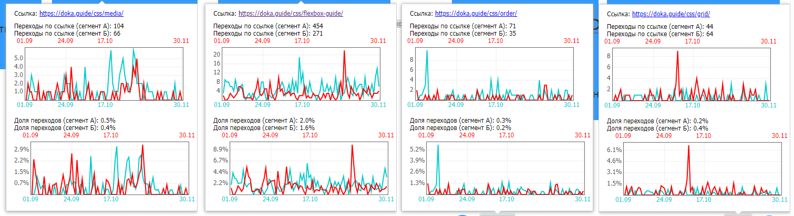
Клики по ссылкам в блоке фичеринга за аналогичные периоды в течение двух лет.
Динамика основных и прокси-метрик, к сожалению, не показывала деградации навигации :) К сожалению — потому что некуда было ткнуть пальцем и восклинуть». Можно было предположить, что читали пользуются инструментами навигации равномерно, но убедительного подтверждения того, является поиск или не является частью естественного пользовательского сценария, не было.
Наконец, был проведён опрос в сообществе читателей и контрибьюторов Доки:
37% пользовались обычным всплывающим поиском;
24% пользовались как всплывающим поиском, так и расширенным на отдельной странице;
39% не знали о существовании поиска.
То есть, больше трети активной аудитории не знало о базовом инструменте навигации. Среди читателей, заходящих в справочник эпизодически, эта доля могла быть ещё выше. При этом 24% респондентов сказали, что пользуются расширенным поиском, хотя зафиксированных переходов на страницу расширенного поиска были единицы.
Статистические данные оказались комплексными и, при этом, неполными. Чтобы лучше понять пользователей и ответить на вопрос «Осознают ли пользователи существование поиска и входит ли он в их инструментарий навигации?» нужно было качественное исследование.
Качественное исследование
Целью исследования было понять:
как пользователи находят материалы в справочнике;
какую роль поиск играет в их сценарии;
где возникает фрустрация при поиске информации.
Инструментом исследования я выбрала полуструктурированные пользовательские интервью один-на-один, продолжительностью 15-30 минут, с открытыми вопросами.
Интервью я строила от общего к частному. Сначала спрашивала про поведение в целом:
«Как часто ты пользуешься Докой?»
«Ты когда-нибудь гуглил(а) Доку?»
«Обычно читаешь один материал или зависаешь?»
«Бывает ли «эффект википедии»?»
Потом про навигацию:
«Как ты находишь материал по нужной теме?»
«Ты когда-нибудь интересовался(лась), сколько материалов написал конкретный автор?»
«Пользуешься ли поиском?»
«Если нет, то замечал(а) ли его?»
И только в конце спрашивала про конкретные элементы интерфейса:
«Ты замечал(а), как часто обновляется блок «фичеринг» на главной?»
«Ты знаешь, что означает символ / в шапке?»
Я не объявляла, что исследую именно поиск и, конечно, не начинала с вопроса «удобна ли кнопка поиска?», чтобы не формировать предвзятость.
Что выяснилось
Три самых популярных ответа звучали так:
«Я обычно через Google захожу»;
«Мне казалось, / это просто украшение»;
«До поиска мотать неудобно».
Таким образом выяснилось:
значительная часть пользователей не считывала поиск как поиск, не знала о его существовании;
те, кто знали, считали поиск не очень удобным;
навигация преимущественно строилась через Google и внутренние ссылки в текстах.
Так этот кейс стал кейсом об обнаруживаемости (discoverability).
Решение — редизайн
В это время команда занималась рефакторингом кода и оказалось, что код шапки предстоит почти полностью переписать. Я сочла это оптимальным моментом для редизайна.
Редизайн должен был решить такие задачи:
Сделать поиск обнаруживаемым;
Сделать поиск удобным для использования;
Сохранить консистентность дизайна.
Ключевые изменения я внесла следующие:
Добавила явную подпись Поиск /, заменив подсказку о хоткее /;
Сделала панель меню прилипающей к верхней границе экрана, а, значит, всегда доступной на десктопе;
Добавила кнопку «Вверх» на мобильных — там для экономии места на экране меню не прилипает.
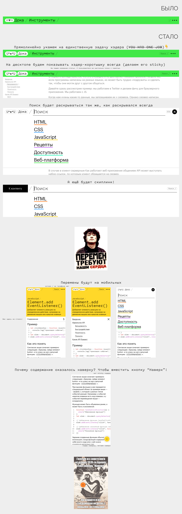
Внутрикомандная презентация редизайна с шутками и мемами.
Повторные интервью
Оценить эффективность редизайна по метрикам было сложно: во-первых, потому что у нас в принципе не было достаточно метрик за предыдущие периоды, а во-вторых, потому что у проекта сильно выражена сезонность. Редизайн был выпущен 31 августа, а Доке, как и всем образовательным проектам, свойственнен бум посещаемости с наступлением осени, и, например, сравнение метрики «Клик по кнопке Меню» в квартал до редизайна и в квартал после было бы недостаточно достоверным.
Поэтому после редизайна я провела повторные интервью, чтобы проверить, стал ли поиск более заметен и изменился ли способ читателей взаимодействовать с Докой. К списку вопросов я добавила так же вопрос о том, обращает ли пользователь внимание на обновления сайта, и все респонденты, кроме одного, самостоятельно назвали недавнее обновление шапки сайта.
Сценарий «я обычно гуглю свой запрос + Дока» так и остался самым популярным сценарием поиска. Однако после редизайна все опрошенные пользователи распознали подсказку о вызове поиска, и никто не счёл её нефункциональным украшением интерфейса (иконкой «для красоты»).
«Мой туннельный синдром передаёт "спасибо", больше не надо так много мотать».
Выводы — что я бы предложила изменить?
Сегодня я бы начала с проектирования аналитики и отслеживала бы такие события:
открытие меню поиска (с указанием источника: кнопка или хоткей),
отправка запроса поиска;
клик по результату поиска.
UX-изменения и система измерения должны проектироваться одновременно.
Аудит дизайн-системы
Контекст
Аналитический центр Нижнего Новгорода создаёт городские интернет-сервисы. Чтобы ускорить и упростить разработку новых продуктов, команда запустила работу над дизайн-системой и пригласила меня провести её аудит.
Задача
Это был мой первый аудит дизайн-системы. Команда обратилась ко мне на самом старте, и я поставила перед собой такие задачи:
получить базовое понимание процессов в команде;
изучить имеющиеся наработки дизайнеров;
оценить архитектуру системы;
выявить проблемные зоны;
дать эмпатичные рекомендации на основе проведённого анализа и собственного опыта.
Анализ
Первым этапом я провела интервью команды. Мне нужно было разобраться в стоящих перед ними задачами, имеющихся ограничениях и ресурсах.
Команда из трёх дизайнеров работает над дизайн-системой для инфраструктуры городских порталов, объединяющей три направления: горожане, юридические лица и администрация. Задача — разработать единый стиль интерфейсов, при этом сохранив индивидуальность каждого направления.
Несмотря на разные конечные аудитории пользователей, все решения принимаются городской администрацией. Это накладывает стилистические ограничения и усложняет согласование.
По результатам интервью у меня появилась гипотеза: ребята хотят оптимизировать процесс разработки новых порталов, но пока не до конца понимают, как именно дизайн-система поможет им в этом и как её правильно строить.
Второй этап аудита включал проверку этой гипотезы — для этого команда предоставила свои наработки. Руководитель отдела разработки при этом задал вопрос: «Не слишком ли мы нагружаем дизайнеров?»
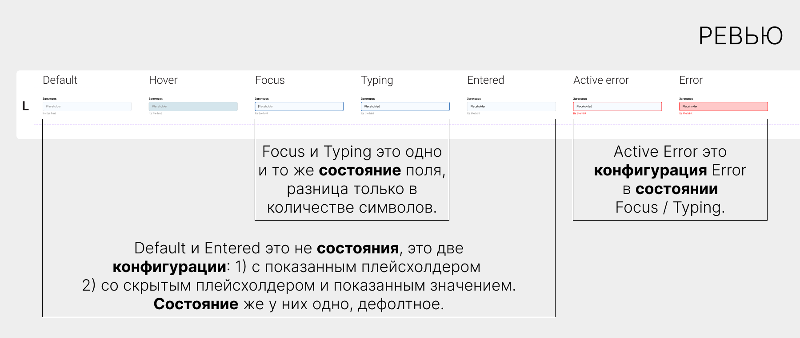
Пример моих комментариев к дизайну компонента.
Процесс
Ответ на заданный выше вопрос: да. Дизайнеры начали работу от частного к общему и углубились в разработку одного компонента — поля ввода <input> — пытаясь предусмотреть все возможные варианты. К моменту, когда компонент попал ко мне на ревью, было отрисовано 360 различных вариантов поля ввода, при этом автоматизация через ассеты в Figma не была полностью настроена. Я отметила это как точку роста, которую важно подсветить комманде: использовать такую громоздкую конструкцию как основу для создания трёх визуально разных направлений будет почти невозможно.
Нужен был редизайн и я вооружилась бритвой, чтобы отсечь всё лишнее. Выявила сугубо технические тонкости, например, неоптимальное использование возможностей Figma. Отметила и проблемы, связанные с недостатком экспертизы в смежных областях и/или коммуникации с разработкой, а именно неполное понимание того, как элементы ведут себя в браузере. В итоге мне удалось пересобрать макет, полностью сохранив изначальный дизайн, и сократив количество сущностей в семь раз: с 360 до 50.
Процесс упрощения и пересборки компонента на слайдах:
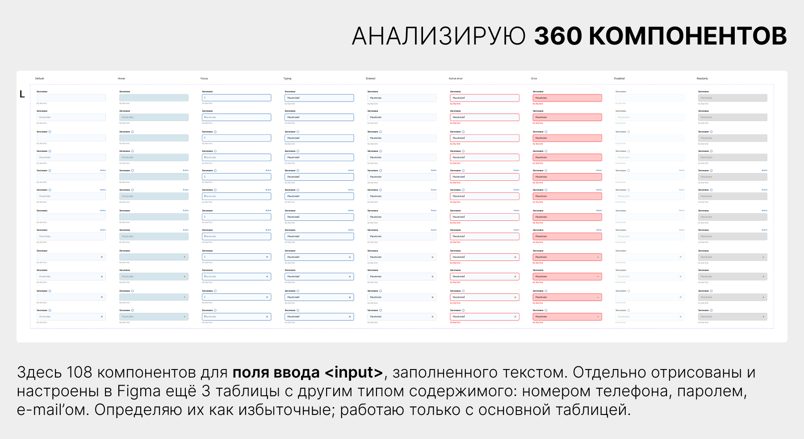
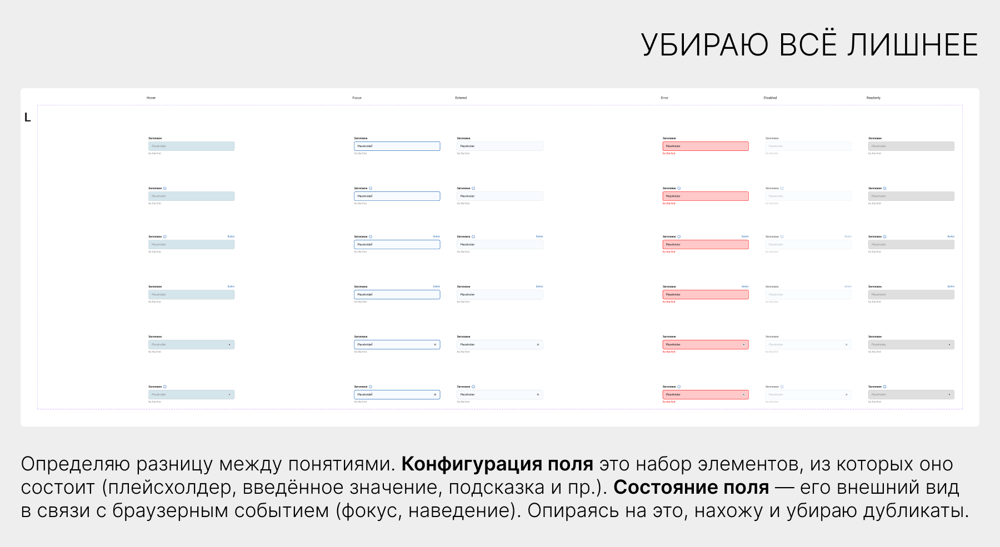
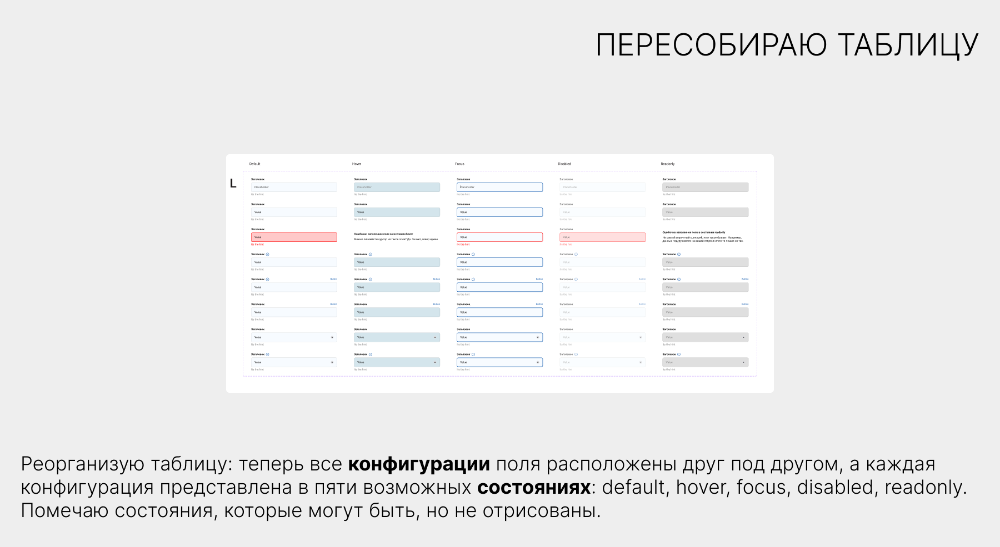
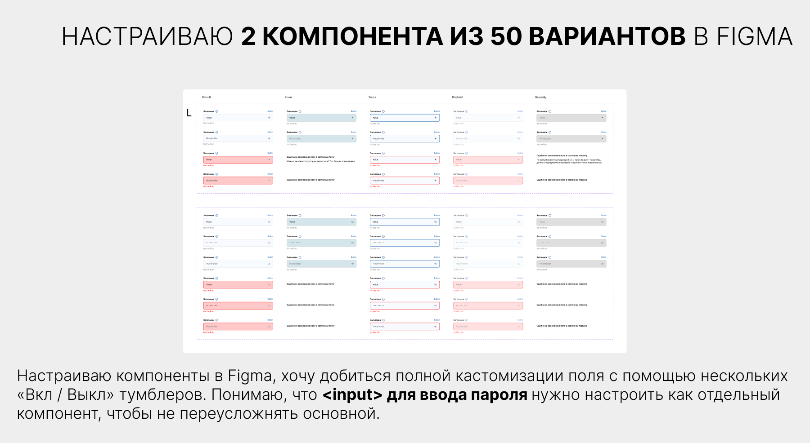
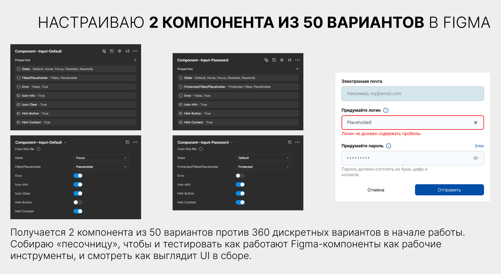
Технологический стек: дизайнеры работают в Figma, разработка использует VueJS, HTML, CSS.
Выводы
Я проанализировала все предоставленные мне материалы и подтвердила свою гипотезу.
Команда дизайнеров начала работу, двигаясь от частного к общему — сфокусировалась на том, чтобы сделать как можно больше опций для одного компонента, но не рассматривая его в контексте всей веб-страницы и дизайн-системы в целом.
Кроме того, стало понятно, что для многих в команде это первая работа с дизайн-системой. Вместо того чтобы выстраивать процессы, они копировали подходы крупных корпораций, что усложняло задачу.
Мой опыт подсказывал, что такой подход съедает много времени, создаёт ощущение, что дизайн-система мешает, а не помогает, и рискует привести к выгоранию команды.
Результат
Результатом моего аудита стал технический редизайн предоставленных макетов и рекомендации по выстраиванию флоу.
В рекомендациях я:
предупредила о рисках выбранного командой подхода к работе;
предложила системный подход к управлению разработкой дизайн-системы, сформулировала вопросы, на которые нужно ответить, чтобы найти идентичность проекта целиком, потом понять, чем отличаются друг от друга его направления, и только затем уже переходить к разработке молекул и атомов дизайн-системы;
подсказала аргументы, которые лидер команды дизайнеров сможет использовать, чтобы защитить интересы своей команды перед разработчиками и менеджментом.
Дизайн-система контента веб-справочника (Дока)
Контекст
Дока — open-source справочник по веб-технологиям, который развивается силами пользователей: они создают и дополняют статьи, поддерживая базу знаний актуальной.
Первичное наполнение справочника делала команда из 6 веб-разработчиков. Каждый автор писал статьи в своей манере, дополняя текст графикой и интерактивными примерами по своему усмотрению. Дизайна сайта в этот период ещё не существовало, как и единого подхода к написанию и оформлению статей.
Задача
Я присоединилась к команде из арт-директора, иллюстратора и литературного редактора в роли дизайнера-разработчика. Нам предстояло выработать стиль проекта, его tone of voice, и подготовить проект к запуску в формате open-source. Для этого нужно было решить следующие задачи:
определить идею проекта и подобрать соответствующий визуальный стиль;
упаковать выбранный стиль в дизайн-систему, с помощью которой авторы смогут самостоятельно создавать графику и примеры с минимальным участием дизайнеров;
опубликовать дизайн-систему, чтобы ей могли пользоваться не только специалисты, но и пользователи проекта, среди которых есть джуны, дизайнеры, продакты и другие.
Анализ
Изучив наработки авторов, мы определили, что наполнение справочника состоит из контента четырёх типов:
литературный текст самих статей;
песочницы — демонстрация того, как описываемый в справочнике компонент выглядит и работает на практике;
обложки статей, передающие настроение и идентичность.
Соответственно, дизайн-система должна была покрыть все эти элементы и связать их в единую визуальную и функциональную экосистему.
Процесс
Самым большим челленджем оказалось то, что дизайн-систему контентной графики нужно было начинать разрабатывать до того, как появился дизайн самого сайта-справочника. Это означало работу в стадии прототипов, то есть все наши наработки должны были быть подготовлены к тому, чтобы на финальном этапе быстро применить к ним изменения, согласующиеся с дизайном сайта, а не переделывать всё сначала.
Во многом это определило стилистику. Мы договорились для создания обложек, иллюстраций и песочниц следовать следующим принципам:
использовать простейшие геометрические формы без дополнительного декорирования вроде рамок или теней;
делать сплошные цветовые заливки без паттернов, текстур, градиентов и размытостей;
ограничивать палитру тремя цветами в пределах одной обложки/иллюстрации/песочницы;
использовать шрифтовую гарнитуру со свободной лицензией — Roboto.
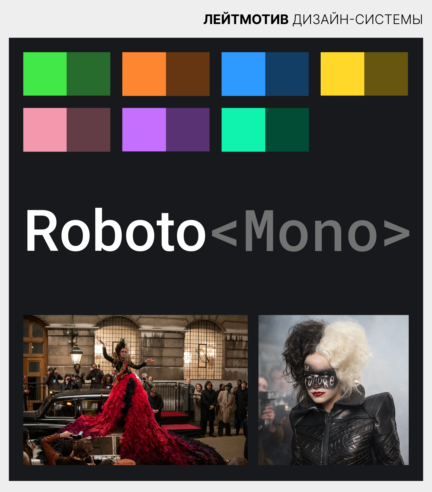
Бунтарка служила напоминанием о неформальном tone of voice проекта.
Гарнитура Roboto была выбрана за визуальную нейтральность, обилие начертаний и доступность для использования, т.к. в будущем дизайн-систему предстояло открыть для контрибьюторов, то есть, любой человек должен будет иметь возможность использовать нужный шрифт.
Эти принципы позволили сделать оформление статей справочника визуально согласованным и единообразным:
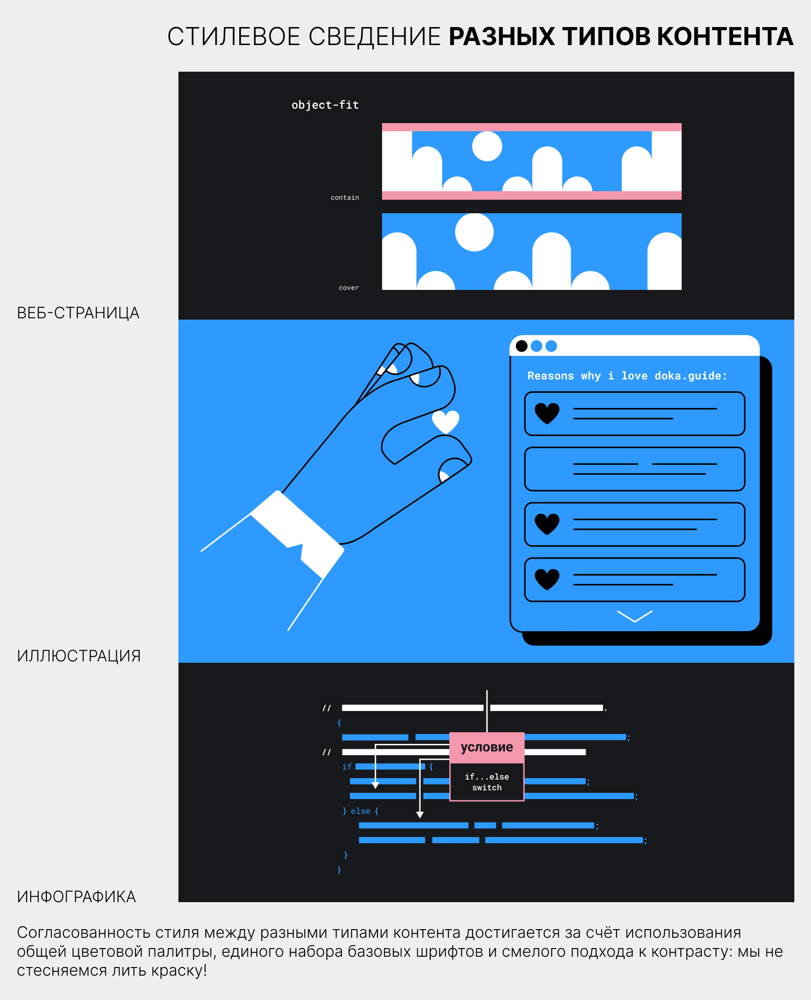
Песочницы
Я владею навыками дизайнера и веб-разработчика одновременно, поэтому моей сферой ответственности были песочницы. Песочница в Доке это веб-страница, посвящённая описываемому в статье предмету. Моё понимание тем, о которых пишут разработчики, сильно облегчило задачу: я не только оформляла элементы веб-страниц, но и помогала разработчикам выразить идеи максимально понятно для читателя.
Готовая песочница из статьи про CSS-анимации в Доке. Оно 👆 кликабельно!
На подготовительном этапе я нарабатывала визуальную базу, оформляя веб-страницы одну за другой. Миновать этот этап было невозможно — тексты и примеры были разрознены по личным аккаунтам авторов, а весь контент хранился только в виде кода в репозитории на GitHub.
Накопив 20-30 дизайнов веб-страниц, код которых был полностью под моим контролем, я смогла проанализировать закономерности, согласовать внешний вид элементов с другими составляющими будущей дизайн-системы, и приступить к её созданию.
Результат моей работы предоставлялся в виде дизайна, HTML-разметки и CCS-кода, стоящих за этим дизайном:
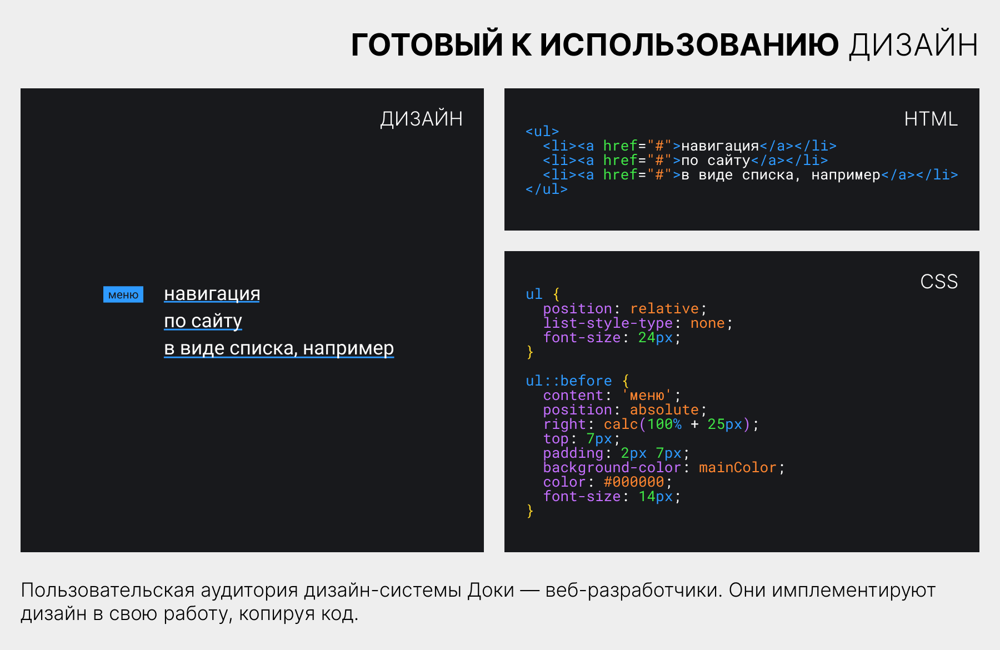
Результат
Результатом работы команды стала система визуального оформления статей справочника, где дизайн технических схем, иллюстраций и песочниц согласуется как между собой, так и с дизайном сайта-платформы.
Дизайн-система песочниц оформлена в виде документации на GitHub, где дизайн элементов сопровождается сниппетами HTML, CSS и JS кода, которые каждый новый автор может скопировать в свой проект. При этом фреймворков в системе нет: код примеров сделан максимально дружелюбным для джуниоров, чтобы даже начинающий разработчик мог быстро понять, как всё работает. Это отражает ключевую ценность Доки — снижать порог входа в веб-разработку.
Дизайн-система схем представляет собой конструктор в Figma, сопровождающийся документацией и советами.
К запуску проекта нам удалось создать дизайн-систему контента, которая содержит:
руководство по литературному стилю, включающее как языковые аспекты, так и tone of voice проекта;
дизайн-систему примеров кода, включающую дизайн компонентов, кодовую базу и документацию;
графический конструктор для создания схем в Figma, сопровождающийся инструкцией по использованию конструктора;
уникальный стиль иллюстраций — единственный непубличный компонент дизайн-системы, потому что личный стиль иллюстратора — это ценность, которую нужно беречь.
В соответствии с дизайн-системой к запуску проекта было оформлено 300+ иллюстраций, схем и примеров.
Время на создание схем и примеров для статей сократилось с нескольких дней до нескольких часов.
В настоящее время дизайн-системой doka.guide пользуется 6 человек из редакции и 460+ внешних контрибьюторов.
Арт-директор, автор дизайн-системы графики — Валентина Смирнова
Продуктовый дизайнер, автор дизайн-системы примеров — Светлана Коробцева
Иллюстратор — Кира Кустова
Литературный редактор — Ольга Алексашенко
Разработка дизайн-системы для онлайн-курса (Яндекс Практикум)
Контекст
Яндекс Практикум — центр обучения IT-профессиям. Особенность Практикума — асинхронный формат и упор на практические навыки. Студенты знакомятся с материалом в удобное для себя время и тут же практикуются в тренажёре.
Тренажёр — миниатюрная веб-страница, встроенная в текст урока, в которую студент должен дописать недостающий код.
VЁRSTKA — курс Практикума по HTML и CSS вёрстке, в работе над которым я участвовала как продуктовый дизайнер.
Задача
У курсов Практикума мощная визуальная идентичность: иллюстрации, инфографика и увлекательный нарратив — всё работает на вовлечение студентов. Тренажёр — место, где код встречается с интерфейсом — должен выглядеть не как чужой элемент, а органично вписываться в эту эстетику.
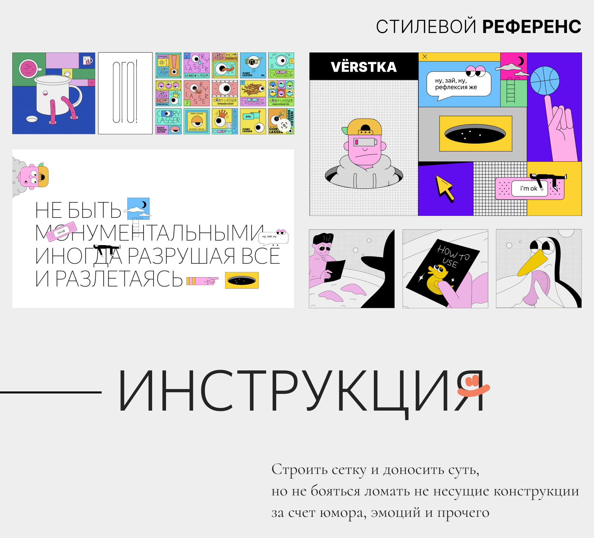
Над написанием курса VЁRSTKA работали 4 разработчика с разным уровнем — от джуна до сениора. Моей задачей было разработать дизайн-систему, которая обеспечит единообразие визуального оформления тренажёров и их соответствие стилю всего продукта, несмотря на разницу в опыте разработчиков.
Решение
Инструментов на старте у меня было только два: визуальный референс от ведущего иллюстратора и собственный опыт прохождения курсов по веб-вёрстке, давший мне представление о том, как устроено обучение в тренировочной среде, т.е. что именно я буду дизайнить.
Я выделила ключевые элементы изобразительного языка, чтобы опираться на них:
контраст тонкой линии и жирного текста;
плотная компоновка элементов;
яркие фирменные цвета;
умышленное нарушение правил.
Также я учла ограничения. Особенность тренировочной среды в том, что это не готовый веб-сайт, а анатомическое пособие по веб-разработке. Код каждого урока преподаватель собирает вручную, оставляя в нём лакуны, которые потом будет заполнять студент. Поэтому код должен быть предельно простым и объяснимым.
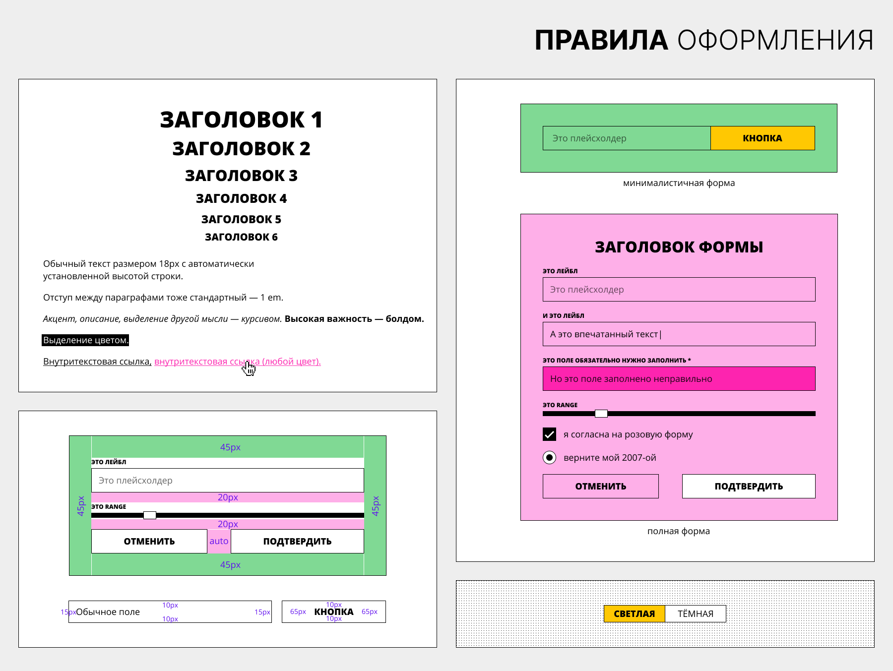
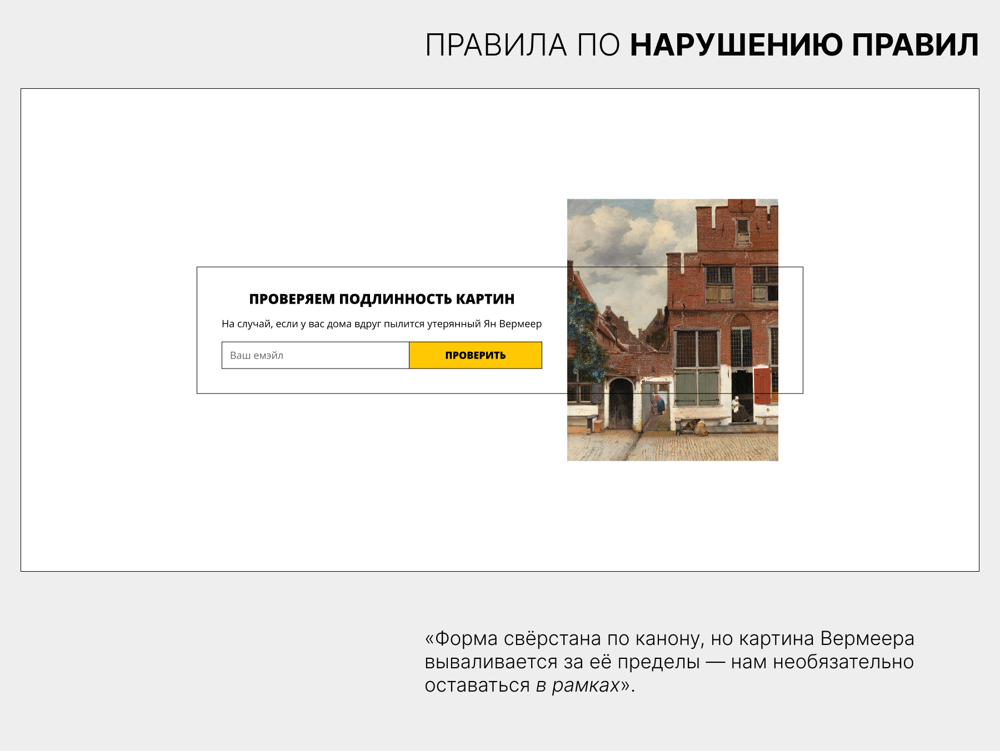
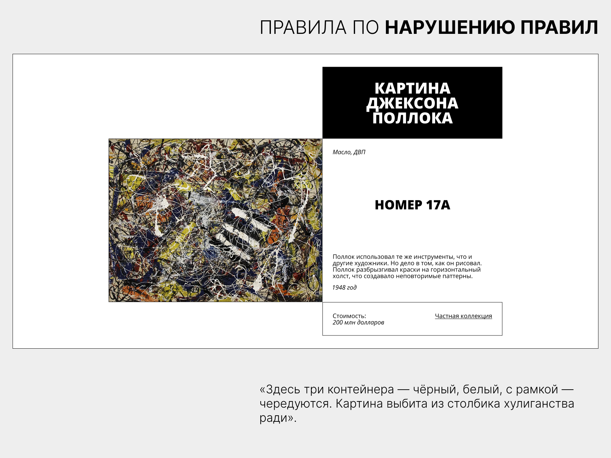
В рамках этого стиля и ограничений я разработала и сверстала базовые веб-элементы — от заголовков до форм, — чтобы авторы курса могли быстро собирать тренажёры из готовых «кирпичиков».
Результат
Моя дизайн-система позволила интегрировать тренажёры бесшовно в общую визуальную экосистему курса, поддерживая и усиливая его нарратив. Благодаря ей:
курс вышел в срок — за 20 месяцев;
работа 4 разработчиков с разным опытом была скоординирована и едина;
появилась база для дальнейшей поддержки и масштабирования курса.
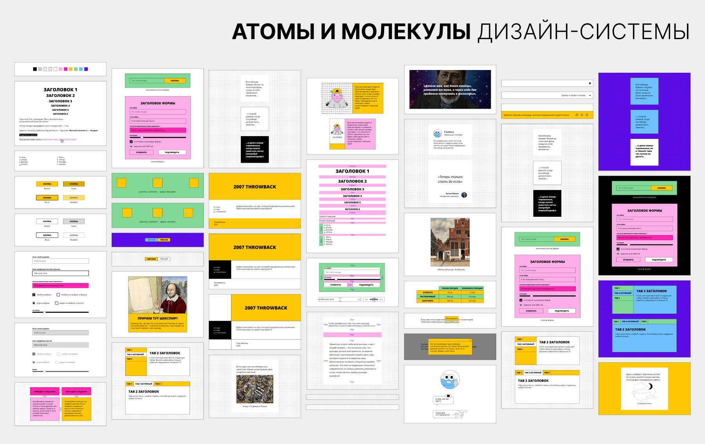
Команда
Тимлид, автор уроков — Александр Патлух
Авторы уроков:
Алёна Батицкая
Алексей Казаков
Наталия Рыжова
Ведущий иллюстратор — Анна Римша
Нарративный директор — Елизавета Золотухина
Портал ЖКХ
Контекст
Портал ЖКХ это сервис для жителей Иркутска, который позволяет всё общение со службами ЖКХ вести онлайн, начиная от подачи показаний счётчиков и заканчивая вызовом мастера. Сейчас у продукта 100 000+ пользователей, он доступен на Web, iOS и Android.
Задача
Когда в 2016 аутсорсный исполнитель сорвал сроки, я взяла на себя разработку внутренних страниц Портала. Я работала совместно с менеджерами проекта, определяющими требования к UI и подаче информации, а в качестве визуального референса использовала разработанный аутсорсером дизайн главной страницы Портала.
Разработать предстояло навигацию по личному кабинету пользователя и интерфейс страниц этого личного кабинета. Данные на Портале представлены, преимущественно, в табличной форме.
Решение
«Рабочий стол» это стартовая страница при входе в личный кабинет пользователя. Он предоставляет быстрый доступ к услугам, за которыми жители обращаются чаще всего.
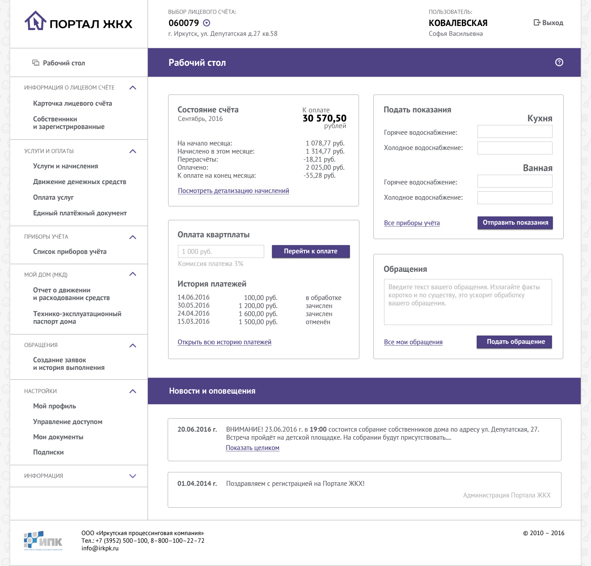
У меня сохранилось фото «бумажного макета» — чтобы найти оптимальное расположение всех необходимых блоков на странице, я вырезала их из бумаги.
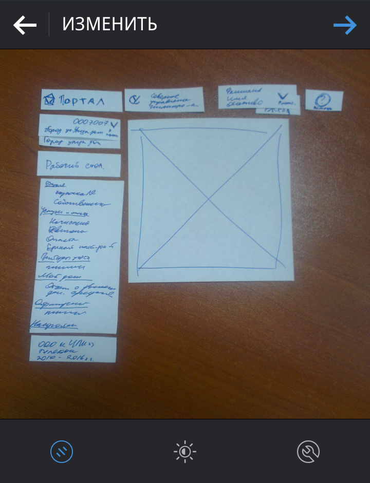
На странице оплаты, помимо самой формы оплаты, требовалось так же представить историю платежей в табличном виде. Таблица, тянущаяся вширь, определила и дизайн формы оплаты, поэтому я разместила информацию о сумме к оплате и комиссии слева и справа от формы.
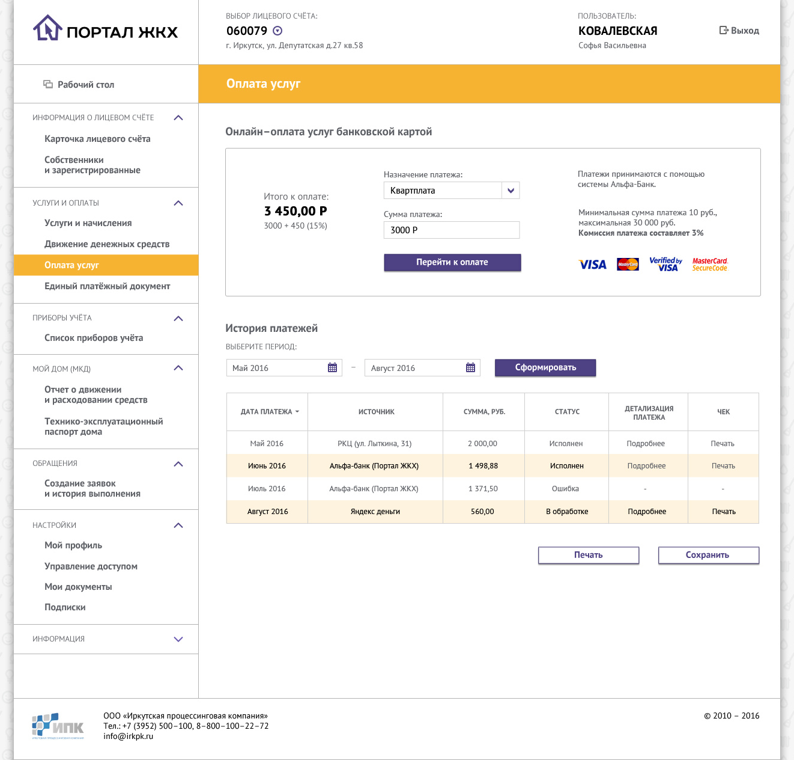
Большая часть контента Портала это таблицы, поэтому было важно сделать их максимально читаемыми. Я использовала чередующуюся подсветку строк, чтобы пользователю легче было вести по строке глазами.
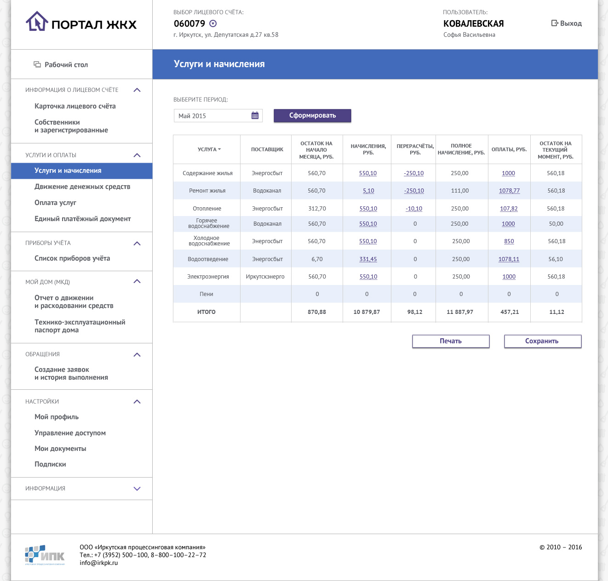
Также нужна была возможность показать комментарии к значениям в ячейках. И эти комментарии тоже могли иметь табличную форму! Я решила отказаться от всплывающих окон и выводить детализацию прямо в таблице, между строк.
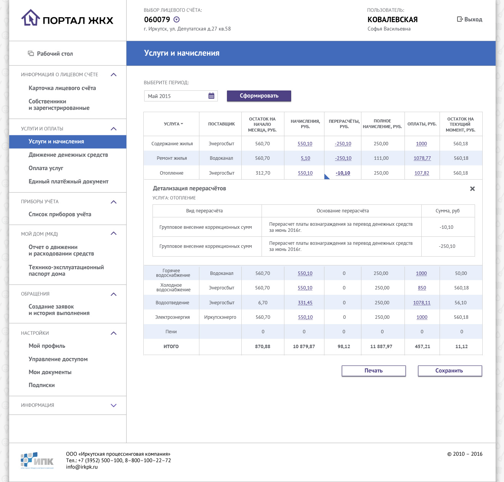
Cегодня я многое сделала бы по-другому. Например, на странице обращений уменьшила бы ширину поля для ввода, чтобы текст легче читался. В истории обращений первым вывела бы текст сообщения, чтобы было легче найти нужное, т.к. пользователи скорее узнают обращение по первым словам, чем по способу подачи.
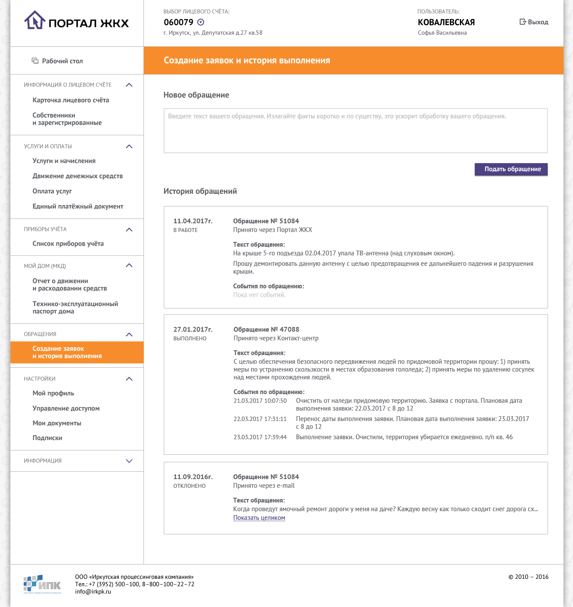
Команда
Менеджеры проекта:
Марина Раковская
Филипп Кононов
Анимации
Контекст
Отрисовать анимацию покадрово для передачи разработчику, оживить элементы самостоятельно при помощи CSS-функций, смонтировать ролик в After Effects, воспроизвести UI видеоигры в Photoshop — сделаю всё, что угодно, для передачи смысла. Или найду исполнителя.
SVG-анимации в стиле Pixel Art
Пиксельные ретро-анимации собраны в Figma из простейших квадратиков и анимированы при помощи прототипирования.
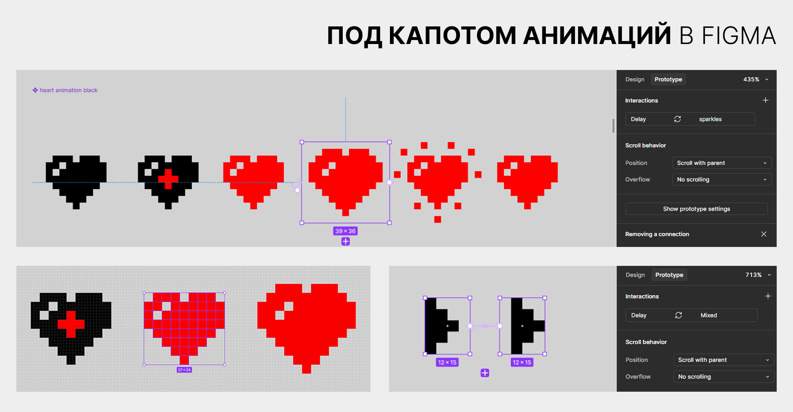
CSS-анимации
Иллюстрация работы временных функций для создания CSS-анимаций из одноимённой статьи в Доке.
Неоновый логотип украшает интерфейс вымышленной биржи и создан при помощи CSS.
Видеовизитка для соцсетей и видеоиллюстрации для статей справочника о состояниях :hover и :active собраны в Adobe After Effects.
Покадровая анимация в Photoshop
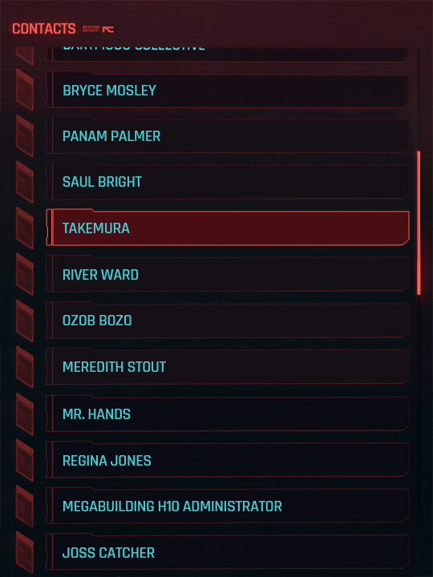
Это моё хобби: вручную воссоздавать необычные интерфейсы, чтобы почувствовать, как они устроены. Экран внутриигрового мобильного телефона из Cyberpunk 2077 отрисован и анимирован в Adobe Photoshop.
Дизайн сайтов с ограничением в технологиях
Контекст
Яндекс-практикум — онлайн-школа с упором на практические навыки. К концу курса студенты выполняют несколько полноценных проектов для портфолио. На курсе по HTML и CSS вёрстке они сверстают несколько сайтов.
Задача
Я была рада поработать руками и присоединилась к команде разработки курса VЁRSTKA в роли UI-дизайнера.
Главная особенность технического задания при разработке учебных макетов это ограничение по технологиям. Сайт должен:
быть свёрстан с использованием только тех знаний, которые уже есть у студента;
включать полный набор изученных технологий для закрепления навыков.
Таким образом, моя задача — подобрать визуальное решение для имеющихся веб-технологий и не выйти за их рамки. Это как дизайнера это требует не только дизайнерских навыков, но и хорошего собственного знания веб-вёрстки.
Также я поставила перед собой личную цель: сделать дизайны максимально разными, от привычного лендинга с красивыми картинками до обскурного панка, который, на первый взгляд нарушает все правила, но, на самом деле, следует им.
Решение
Для каждого сайта писательницей курса был подготовлен контент, рефлексирующий над процессом обучения. Мой флоу работы над каждым макетом состоял из нескольких этапов:
Анализ контента, поиск визуальной метафоры.
Изучение технических требований.
Сборка скелета сайта в Figma.
Поиск оформительских решений для всех требующихся технологий в рамках выбранного стиля.
Передача макета разработчику.
Подгонка в свёрстанного сайта и макета друг под друга в технике Pixel Perfect.
Обычно при подгонке в технике Pixel Perfect разработчик подстраивается под дизайн, но в случае с учебными макетами процесс идёт наоборот: важно сохранить код максимально лаконичным и логичным, поэтому при прочих равных лучше подвинуть что-то в макете.
Результат
Для курса я создала 6 проектных работ нарастающей сложности.
1 проектная: Оно тебе надо.
Простой десктоп с сетками, текстом и изображениями. Задача — показать, что даже на базовом уровне можно сделать страницу современной и необычной. Никаких скучных лендингов с кнопкой "позвони".
Для студента: технологии встраивания видео. Для меня — минимум средств, в котором всё ещё нужно сохранить идентичность. — вместо тире — моя маленькая шутка.
Адаптив на 2 размера и две цветовые схемы. Осознанным решением было не делать черное и белое. Опираясь на тему контента, выбрала цвет бумаги и гармоничный к нему темно-синий. Буквицы и элементы газетного дизайна поддерживают стиль.
Адаптив на 3 размера, две цветовые схемы, сложные эффекты, masonry. Чтобы обыграть тему наведения фокуса я использовала тень текста (несфокусированная картинка расплывается), а картинки в галерее расположила подобно диафрагме фотоаппарата, обращаясь к теме оптики.
Ведущий дизайнер с 12 годами опыта в веб-разработке, включая 3 года на позиции синьора.
Специализируюсь на дизайн-системах, создаю мосты между дизайнерами, фронтендерами и продактами, знаю JavaScript, CSS и HTML, менторю джунов-фронтендеров.
Верю, что дизайн — это искусство организации и передачи информации.